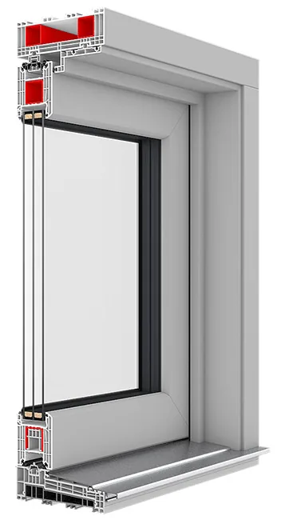

Hebe-Schiebetüren für Terrasse und Garten
Hebe-Schiebe-Elemente öffnen den Wohnraum zur Terrasse, ohne Platz im Raum zu beanspruchen. Nachfolgend sehen Sie, welche Werte unsere Systeme erreichen. Welches für Ihre Öffnung infrage kommt, klären wir beim Aufmaß.
Der Übergang nach draußen – ohne Stolperkante
Hebe-Schiebe-Elemente gleiten zur Seite, statt in den Raum zu schwenken. Dadurch lassen sich sehr große Glasflächen öffnen, ohne dass Möbel weichen müssen. Die Schwelle führen wir auf Wunsch bodengleich aus – das ist im Alltag mit Kinderwagen ebenso angenehm wie später mit Rollator.
- Uw-Wert (je niedriger, desto besser)ab 0,71 W/(m²K)
- Flügelgewichtbis 400 kg je Flügel
- Schwellebodengleich ausführbar
- Bedienungmanuell oder motorisch
- MaterialienKunststoff, Aluminium oder Holz-Aluminium
- Einbruchschutzbis Widerstandsklasse RC2

Was für Hebe-Schiebe-Elemente spricht
Große Öffnungen stellen besondere Anforderungen – an Statik, Dichtigkeit und Bedienkomfort. Diese Punkte sind dabei entscheidend.
Der Flügel läuft zur Seite statt nach innen. Davor können Möbel, Pflanzen oder der Esstisch stehen bleiben.
Große zusammenhängende Glasflächen bringen deutlich mehr Licht als mehrere kleine Fenster mit Rahmen dazwischen.
Eine bodengleiche Schwelle ohne Vorsprung – heute bequem, in zwanzig Jahren möglicherweise entscheidend.
Beim Anheben des Griffs löst sich der Flügel aus der Dichtung und läuft anschließend fast widerstandsfrei – auch bei 400 kg.
Umlaufende Dichtungen und eine wärmegedämmte Schwelle verhindern Zugluft und Wärmebrücken genau dort, wo sie sonst entstehen.
Per Taster oder App zu öffnen – sinnvoll bei sehr großen Elementen oder wenn die Bedienung leichtfallen soll.
Mit diesen Werten investieren Sie in eine förderfähige Lösung: Mit einem Uw-Wert bis 0,71 W/(m²K) liegt es deutlich unter der Grenze von 0,95 W/(m²K), die die BAFA im Rahmen der Bundesförderung für effiziente Gebäude (BEG) für Fenster und Fenstertüren voraussetzt – sowohl als Einzelmaßnahme als auch im Rahmen einer Sanierung zum KfW-Effizienzhaus. Sie profitieren also nicht nur von einem fließenden Übergang zwischen Wohnraum und Garten, sondern auch von attraktiven staatlichen Zuschüssen, die Ihre Investition zusätzlich entlasten. Wir prüfen gerne unverbindlich, welche Förderung für Ihr Projekt infrage kommt – mehr dazu auf unserer Förderung-Seite.
Weitere Schiebesysteme auf Anfrage
Oben steht, was wir üblicherweise empfehlen. Je nach Anspruch und Budget realisieren wir für Sie auch:
Aluminium-Hebeschiebetür für die größten Formate, Flügelgewicht bis 400 kg, bis 12 m Breite (vierteilig). Uw bis 1,0 W/(m²K) – nicht förderfähig, dafür maximale Größe und Optik.
Holz-Aluminium-Ausführung mit warmer Optik, Uw bis 0,75 W/(m²K) – siehe Holzfenster.
Parallel-Schiebe-Kipp-System aus Aluminium mit niedriger Schwelle, günstigerer Einstieg.
Für Fensteröffnungen statt großer Terrassenelemente – siehe Kunststofffenster und Aluminiumfenster.
Was Sie über unsere Hebe-Schiebe-Elemente wissen sollten
Er gibt an, wie viel Wärme ein Fenster nach draußen durchlässt – Rahmen und Glas zusammengerechnet. Je niedriger die Zahl, desto besser dämmt das Fenster. Zur Einordnung: Ein altes, einfach verglastes Fenster liegt bei etwa 5,0, ein Zweifach-Isolierglas aus den achtziger Jahren bei rund 2,8. Gesetzlich gefordert sind heute höchstens 1,3, für die BAFA-Förderung höchstens 0,95. Unsere Systeme erreichen hier 0,71 W/(m²K). Eine anschauliche Gegenüberstellung finden Sie auf unserer Förderung-Seite.
Ja. Die Schwelle aus PVC und Aluminium ist so konstruiert, dass am Übergang zum Innenboden kein Vorsprung entsteht – sie schließt bündig ab. Das ist nicht nur im Alter oder mit Rollstuhl ein Vorteil, sondern auch im Alltag mit Kinderwagen oder beim Tragen.
Hebe-Schiebe-Elemente erlauben erheblich größere Glasflächen als klassische Dreh-Kipp-Fenster, weil die Flügel nicht in den Raum schwenken, sondern zur Seite gleiten. Die konkret mögliche Größe hängt von Gewicht, Statik und Einbausituation ab – das klären wir beim Aufmaß vor Ort.
Trotz des Flügelgewichts bleibt die Bedienung leichtgängig: Beim Anheben des Griffs wird der Flügel aus der Dichtung gehoben und läuft dann nahezu widerstandsfrei auf der Laufschiene. Auf Wunsch ist ein motorischer Antrieb möglich.
Entscheidend sind Größe und Anzahl der Elemente, der Glasaufbau, die Farbe (weiß ist günstiger als folierte oder lackierte Ausführungen), die Beschlag- und Sicherheitsausstattung sowie die Einbausituation vor Ort. Pauschalpreise aus dem Internet sagen deshalb wenig aus. Wir messen kostenlos auf und erstellen Ihnen ein verbindliches Festpreisangebot inklusive Montage und Entsorgung der Altelemente.
Ja. Das BAFA bezuschusst den Fenstertausch im Rahmen der BEG-Einzelmaßnahmen mit 15 % der förderfähigen Kosten, sofern das eingebaute Fenster einen Uw-Wert von höchstens 0,95 W/(m²K) erreicht. Unsere Hebe-Schiebe-Elemente erreichen Werte bis 0,71 W/(m²K) und liegen damit deutlich darunter. Wichtig: Der Antrag muss gestellt sein, bevor Sie uns beauftragen. Details finden Sie auf unserer Förderung-Seite.
Durch ein PVC-Profil mit Aluminium-Verstärkung, das die Wärmebrücke an der Schwelle unterbricht. Zusätzlich sorgt ein besonders dichtes Dichtungssystem dafür, dass sich das spürbar auf die Dämmleistung auswirkt.
Hebe-/Schiebeelemente für Ihr Projekt anfragen
Ob Neubau oder Sanierung – wir beraten Sie unverbindlich zu Hebe-Schiebe-Elementen. Wir kommen für das Aufmaß zu Ihnen nach Isernhagen, Hannover oder in eine der umliegenden Gemeinden.
Angebot anfragen